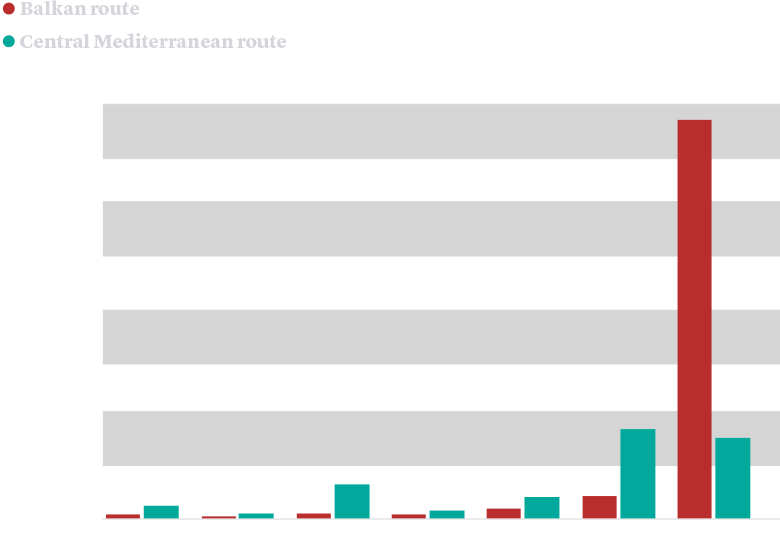

At the beginning of 2015, the migration route leaving from Turkey and going through the Balkans acquired importance, with a transit of approximately 850,000 migrants in just one year. To interrupt this flow, an agreement has been reached between the European Union and Turkey. Furthermore, Bulgaria has constructed a barbed wire barrier, extending for 146 kilometres, on the border with Turkey.
The amount of crossings through the Balkan route compared to those in the Central Mediterranean.
Source: Frontex